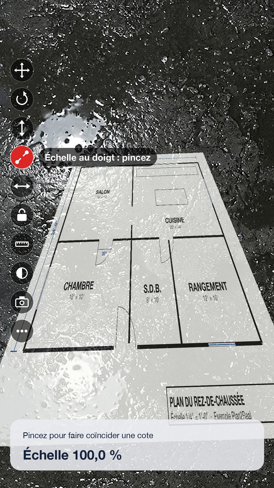

Tout ce que fait Plan2Real
Un parcours simple, de la photo du plan jusqu'au plan posé au sol, puis des outils pour l'ajuster et le partager.

Importer le plan
Photographiez la feuille ou choisissez un fichier : l'app garde toute la netteté du plan.
- Appareil photo à la résolution maximale du capteur (48 Mpx sur les iPhone Pro), priorité à la qualité, sans flash
- Image de Photos ou fichier (PDF ou image)
- PDF : le format réel de la page est lu, l'échelle s'applique directement
- Vos projets sauvegardés sont dans « Mes projets »

Redresser la feuille
Une photo prise de biais devient un plan bien droit, aux vraies proportions.
- Détection automatique de la feuille, même posée sur un panneau ou une table
- 4 poignées et une loupe pour viser chaque coin au pixel près
- Les vraies proportions de la feuille sont rétablies, même photographiée en angle
- « Image entière » pour un plan déjà droit (capture d'écran, numérisation)

Donner l'échelle
L'échelle se demande à l'utilisateur plutôt que de la deviner : c'est plus fiable.
- Distance connue : A et B sur une cote du plan, puis sa longueur en mètres ou en pieds-pouces
- Échelles courantes : 1/16" à 1" = 1', 1:20 à 1:500, ou 1:N
- Formats de feuille : Lettre, Légal, Tabloïd, ARCH C à E, A4 à A0
- Les dimensions réelles du plan s'affichent avant de passer au sol

Poser le plan au sol
La même méthode de visée que SITE DIM : le plan se pose sur la vraie surface, pas dans les airs.
- Cible fixe au centre : blanche, puis verte quand la position au sol est confirmée
- LiDAR en priorité, sinon plan détecté par ARKit; jamais une simple estimation
- Moyenne de plusieurs visées : un reflet ou un rebord ne fausse pas la hauteur
- Le plan est ancré à l'endroit réel et reste stable en marchant

Les outils au sol
Une colonne de boutons ronds à gauche de l'écran, comme dans SITE DIM. Le nom de la fonction s'affiche 2 secondes, puis disparaît : rien ne cache le plan.
- ✥Déplacer : glissez un doigt
- ↻Tourner : glissez à gauche ou à droite, ou deux doigts
- ↕Hauteur : monter ou baisser le plan, au centimètre
- 🤏Échelle au doigt : pincez pour caler une cote sur un ruban au sol
- ↔Ajuster l'échelle sur une cote réelle (ex. porte de 36 po)
- 🔒Verrou : plus aucun geste ne bouge le plan
- 📏Mesurer entre deux points au sol
- ◐Opacité du plan
- 📷Photo à partager
- •••Vidéo, alignement sur 2 repères, quart de tour, replacer
Sauvegarder et revenir sur place
- Le bouton « Sauvegarder » enregistre le plan, son échelle, les repères A et B et son emplacement au sol
- En rouvrant le projet sur place, ARKit reconnaît les lieux et le plan se replace tout seul
- Tout reste sur l'iPhone : aucun compte, aucun serveur, aucune publicité
Bon à savoir
Sols difficiles. Neige, sol mouillé ou lustré, gravier uniforme et faible lumière gênent la réalité augmentée. Visez une zone texturée et sans reflet; la lampe s'allume toute seule dans le noir.
Grandes surfaces. Sur un terrain, la réalité augmentée peut dériver. Alignez le plan sur deux repères réels (piquets, coins) pour le recaler.
Plans photocopiés. Une impression ou une photocopie déforme l'échelle : la méthode « distance connue » corrige ce problème.